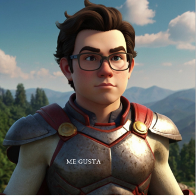
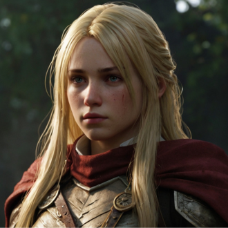
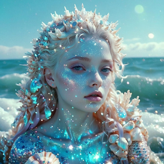
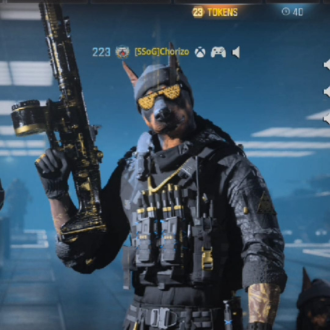

-
MEGUSTA
Descrição
MeGusta tem o poder de renovar e recriar. Todos aqueles que querem conhecer e entrar em caminhos desconhecidos sem medo e com coragem. É um grande buscador de conhecimento e não se satisfazem na indagação da verdade. Sua lealdade é expressa nos seus atos, sempre pautados na justiça e na equidade. A humildade é sua característica mais sutíl, pois revela sua origem e experiência de vida.
-
LAURALIS
Descrição
Lauralis, uma jovem do interior de Minas Gerais, é conhecida por sua coragem e espírito aventureiro. Desde criança, demonstrava uma curiosidade insaciável e um forte senso de justiça. Sempre pronta para ajudar os outros, ela possui um coração generoso e uma determinação inabalável. Inteligente e engenhosa, Laurelis utiliza seu conhecimento e habilidades para superar desafios, inspirando todos ao seu redor com sua liderança natural e compaixão. Sua resiliência e otimismo fazem dela uma verdadeira heroína, sempre disposta a lutar pelo bem-estar de sua comunidade.
-
GELITA
Descrição
Gelita é uma heroina forte e gelada. Ela tem o poder de congelar matéria e mente, alcançando poderes jamais imaginados. Seus oponentes são principalmente heróis do tipo quente que tentam derrete-la, mas, ela ao derreter, Gelita vira água e apaga a chama dos vilões quentes. Não tente entrar numa com ela que ele te congela. Natural da Geelândia, uma região ao norte do sul, bem característico de região sem características. A região só possui gelo e seres humanos de sangue quente congelam instantâneamente ao tentar adentrar em seu território.
-
YRIFINHO
Descrição
Yrifinho é um herói do mar, conhecido por sua bravura e habilidades excepcionais nas águas costeiras do Rio de Janeiro. Ele resgata homens arrebatados por sereias e protege a vida marinha de ameaças. Inteligente e estrategista, Yrifinho utiliza seu conhecimento das correntes e ecossistemas marinhos para enfrentar desafios com precisão. Sua empatia e conexão profunda com os animais marinhos lhe conferem uma habilidade única de comunicação com criaturas do oceano. Defensor incansável do meio ambiente, combate a poluição e a pesca ilegal, inspirando todos com seu compromisso em preservar os oceanos.
-
LELECO
Descrição
Leleco é o herói dos investidores em criptomoedas. Empresário do ramo de transporte, investiu parte de sua fortuna em desenvolver métodos de distribuição financeira descentralizada. CEO de uma empresa responsável pela logistica pessoal é um ambicioso proprietário de diversos projetos cripto. Dizem que pode ter sido um dos criadores da mais famosa criptomoeda chamada Lelecolandia. A cripto é disponível apenas para investidores convidados, por essa escassez é extremamente rara e vale bilhões. É impossível achar uma no mercado sem do devido convite. Os seletos proprietários desfrutam de prazeres desconhecido de todos.
-
CHORIZO
Descrição
Chorizo é o Herói dos caninos. Sua raça e distinção o fazem poderoso perante os inimigos. Sua lealdade é incomparável. O verdadeiro amigo do ser humano. Ele luta com todas as forças para defender seus seguidores das mais distintas situações de perigo. Traz alegria em momentos de solidão e evoca a disciplina. e adversidades da vida.